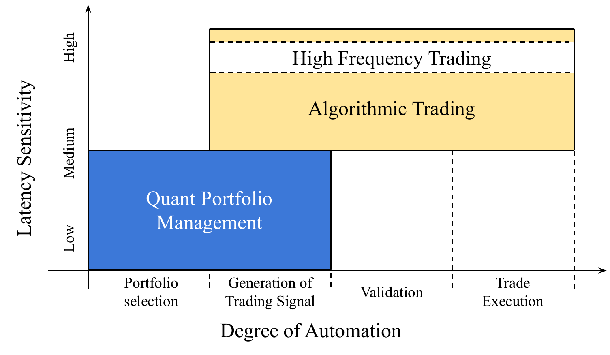

算法交易策略研究:基于机器学习、深度学习等方法的探索
1 量化投资的基本概念
金融市场自诞生以来，受到技术、经济、政治和社会因素的共同影响，持续演变并不断发展。 从传统交易方式到现代高度自动化的市场，投资行为逐渐演变成为一门关于投资的科学， 发展出一类利用数学、统计学和定量分析等方法来制定投资策略的投资方式——量化投资。
在欧美等发达金融市场，量化投资已经有几十年的历史，其有效性经历了市场长期的检验。 我国量化投资兴起于2010年左右，并在之后经历了快速的发展。 根据中国证券投资基金业协会的统计，截止2021年末， 已备份的量化基金共有 16850 只，规模达到了 1.08 万亿元 1。 随着量化投资规模的不断扩大，对量化投资的研究需求也在不断增加。 本章将简要介绍量化投资及其相关概念。
量化投资的概念十分宽泛。 理论上，只要使用数学、统计学或其他定量分析方法制定的投资策略都可以归类为量化投资。 学界通常将量化投资分析师（Quant）分为两种类型(Meucci, 2011)： P-Quant和Q-Quant。 P-Quant通常适用于买方市场。 他们的主要角色是根据历史数据预测未来趋势，然后确定交易策略。 Q-Quant通常适用于金融机构的卖方。 他们的主要任务是根据数学模型对金融衍生品进行定价。 表1.1展示了它们的部分区别。 本文所讨论的对象是买方量化，即P-Quant。 如无特殊说明，下文量化投资皆指买方量化（P-Quant）。
| Q-Quant | P-Quant | |
|---|---|---|
| 业务 | 卖方，如投资银行等 | 买方，如对冲基金等 |
| 测度 | 风险中性（risk neutral） | 真实概率（real probability） |
| 目标 | 推断现在 | 预测未来 |
| 工具 | 随机过程、偏微分方程 | 时间序列分析，贝叶斯统计，机器学习等 |
买方量化投资主要分为两个部分： 投资组合管理（Portfolio Management，QM） 和算法交易（Algorithmic Trading，TA）。 这两部份共同覆盖了从投资组合构建到交易执行的全过程。 图1.1展示了投资组合管理和算法交易之间的关系， 其中，横坐标代表研究范围及其自动化程度，纵坐标表示时间延迟敏感度。 可以看到，从投资组合构建到交易执行，自动化程度逐渐增加。

Figure 1.1: 投资组合管理与算法交易、高频交易的关系(Gomber et al., 2011)。
投资组合管理重点在于通过分析交易数据、 基本面信息和市场情绪等来构建交易组合， 目的是获得超过市场基准的超额收益。 其研究范围通常包含组合构建及低频信号的生成，例如股票市场中的选股与择时。 这一过程对延迟的敏感度较低，可以使用非常复杂的模型进行研究。
算法交易则主要基于对市场微观结构的理解，利用低延迟技术 在短时间内迅速处理大量订单，从而在微小的市场波动中获取利润。 其研究范围通常涵盖高频信号的生成、算法验证以及交易执行三个过程。 算法交易对延迟敏感度和硬件技术的要求都比较高， 需要高效交易系统的支持。
Hasbrouck & Saar (2013) 将算法交易分为 专有算法（Proprietary Algorithm，PA） 和代理算法（Agency Algorithm，AA）两类。 代理算法通过帮助交易者制定交易策略来节约交易成本。 专有算法的目的则是直接从交易环境中获利， 一般包括做市和统计套利两种类型， 通常用于资产管理公司和对冲基金的自营产品。 与代理算法相比，专有算法对速度延迟更加敏感， 是狭义上的高频交易(S. Li et al., 2021)， 目前，学术界和各国监管机构尚未对高频交易给出明确统一的定义 (Brogaard & Garriott, 2018; Chung & Lee, 2016; Comerton-Forde et al., 2018; Jones, 2013; Miller & Shorter, 2016)。 表1.2比较了代理算法与专有算法的部份相同点和不同点。
| 代理算法 | 专有算法（高频交易） | |
|---|---|---|
| 预设计的交易决策，实时观察市场数据，自动提交订单，自动订单管理，没有人为干预 | ||
| 以基准价格为交易目标 | \(|\) | 通过买卖差价获利（做市、套利） |
| 最小化市场冲击 | \(|\) | 迅速处理撤单 |
| 随着时间和市场的变化处理订单 | \(|\) | 持仓周期非常短，需要在日内平仓 |
投资组合管理主要关注资产的中长期收益， 而不太会涉及市场冲击、交易合规等交易层面的具体细节。 相比之下，算法交易的目标是通过精心设计的交易策略， 来减少交易的摩擦成本或通过统计套利等方法直接从交易中获益。 需要注意的是，交易执行中的摩擦成本对投资组合的整体收益有显著影响。 因此，一个高效的量化投资策略应当将投资组合管理与算法交易有效结合起来。